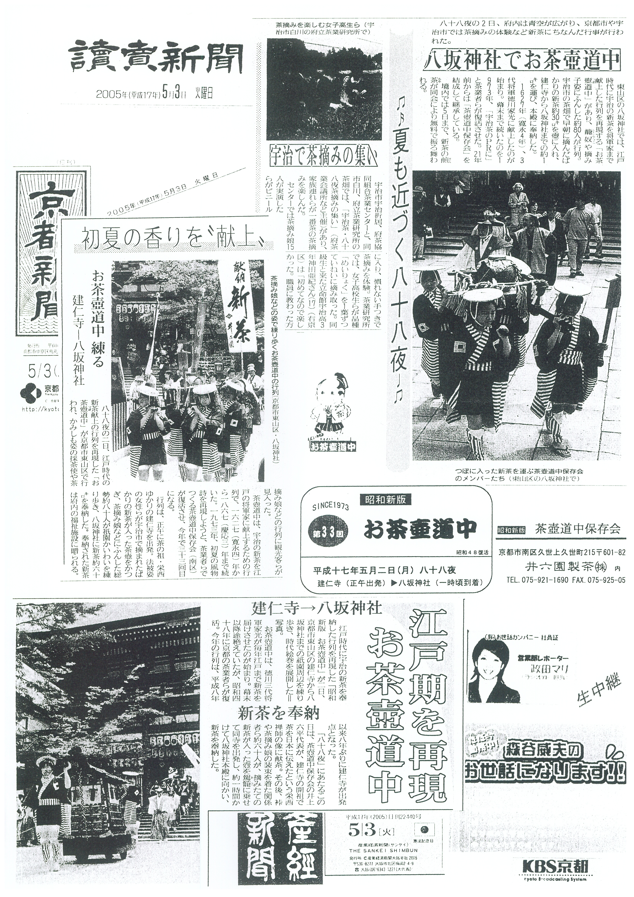
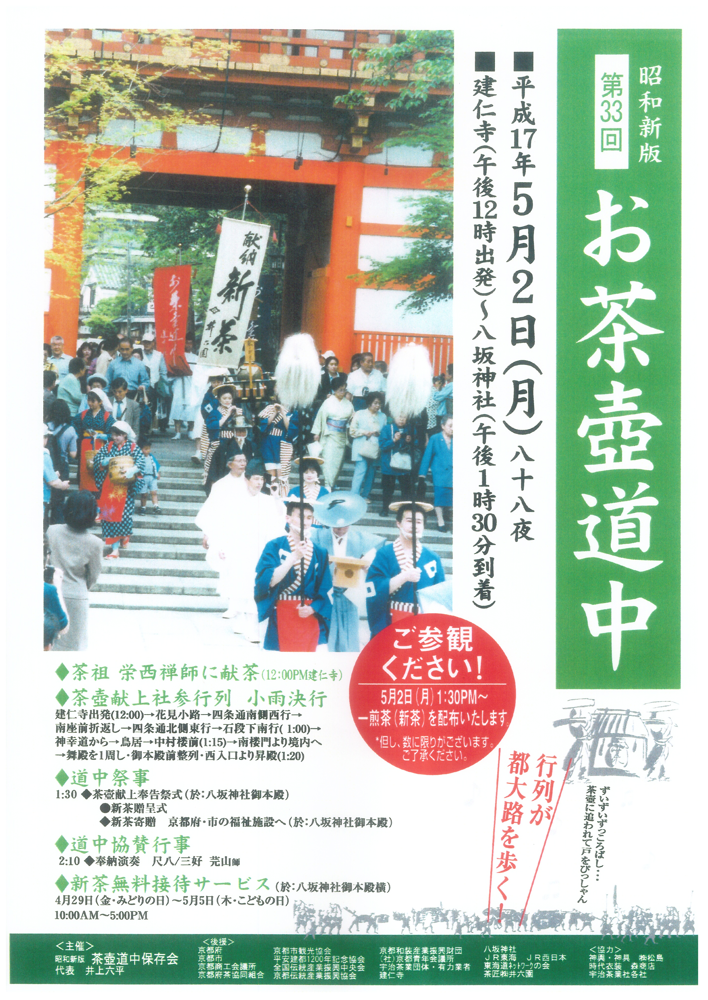
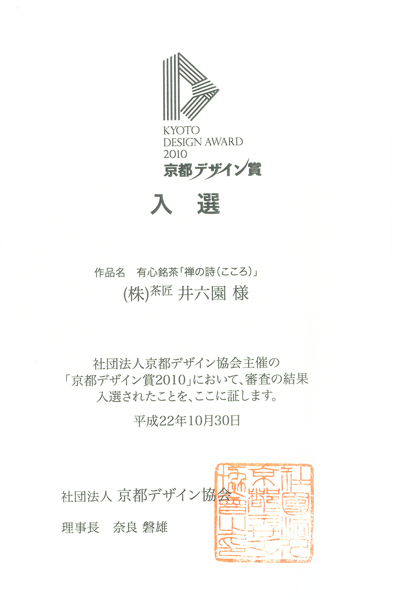
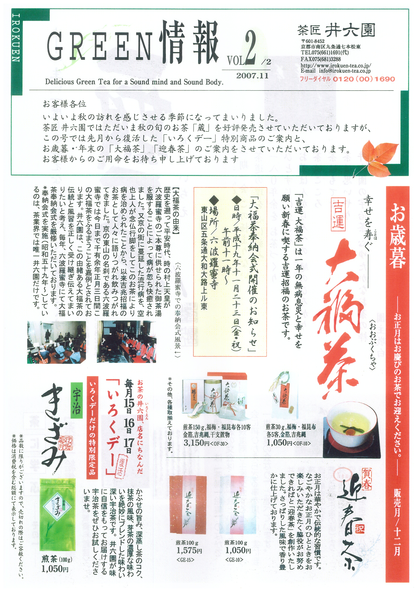
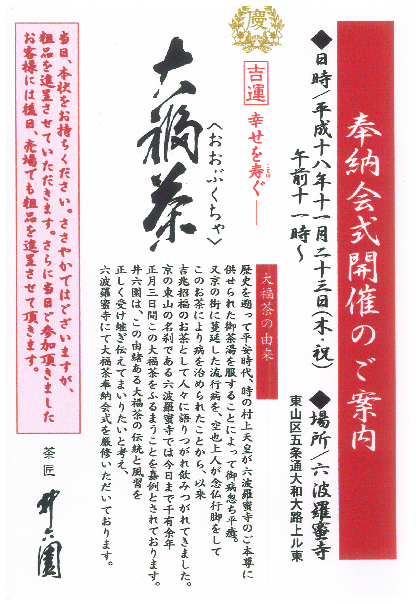
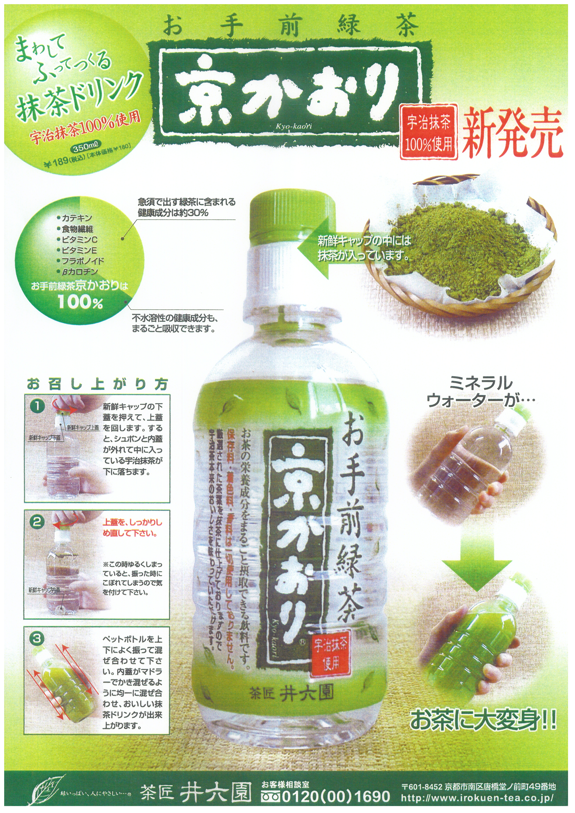
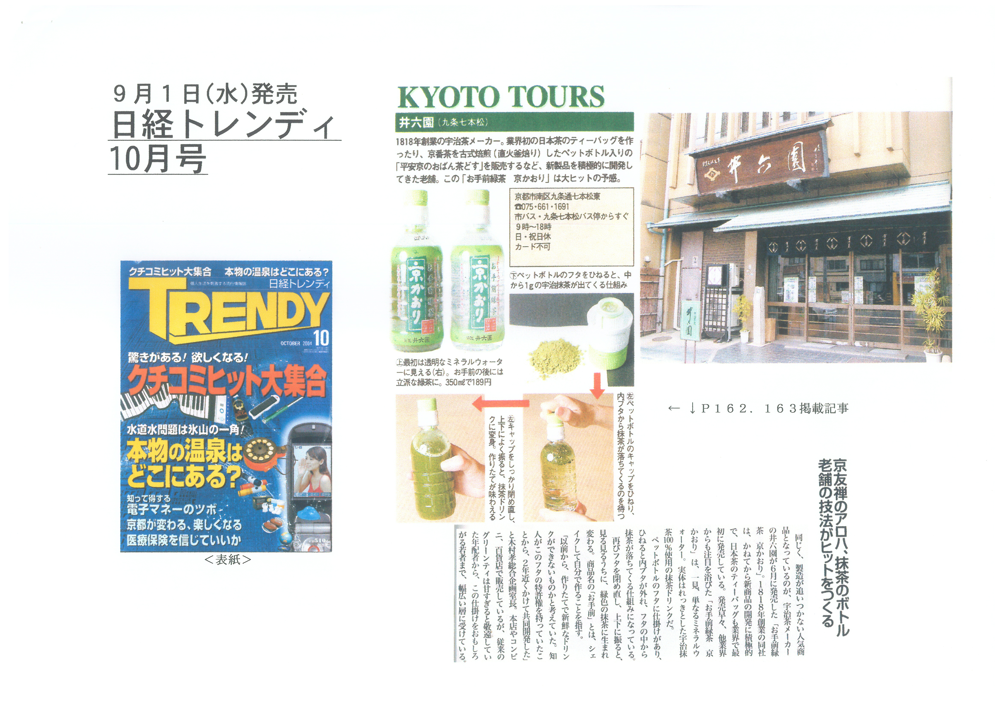

文政元年（1818年）創業
文政元年（1818年）の創業以来、私たちは宇治茶処として二百余年にわたり、お茶と真摯に向き合ってまいりました。「井六園」の屋号で重ねてきた歩みを受け継ぎ、2021年、社名を「京都茶乃蔵」と改めました。掲げるのは「伝統と革新」。先人から託された技と心を守りながら、時代に寄り添う新しいお茶の楽しみ方を提案し続けています。
社名の「蔵」には、古くからお茶の通人に大切にされてきた知恵が込められています。摘み立ての新茶を一夏越えて静かに寝かせると、渋みがやわらぎ、コクと旨みが深まる。この「後熟」の味わいこそ、京都・宇治の地に守られてきた私たちの財産です。
創業からの歩み
文政元年（1818年）、京都市南区九条の地でお茶屋として歩みを始めました。東寺にほど近いこの地で、宇治茶を中心とした銘茶を商い、二百余年。京都の伝統と雅を守りながら、煎茶・玉露・抹茶・ほうじ茶・京番茶など、季節と暮らしに寄り添うお茶をお届けしています。
伝統を守り、育てる
蔵出し茶「蔵」は、春に摘んだ新茶を生産地の蔵で温度を一定に保ちながら、じっくりと熟成させる伝承の製法による季節限定のお茶です。一夏を越えることで渋みがやわらぎ、コク深くまろやかな味わいへと育ちます。
大福茶（おおぶくちゃ）は、無病息災と幸せを願う新春のお茶で、平安時代に村上天皇へ献じられた故事に由来します。私たちはその伝統と風習を正しく受け継ぐため、京都・東山の名刹 六波羅蜜寺において大福茶奉納会式を厳修しており、これは茶業界で唯一の取り組みです。
革新に挑む
歴史に甘んじることなく、お茶の新しいかたちを提案してきたことも、私たちの誇りです。業界に先駆けて、日本初の緑茶ティーバッグや水出し緑茶を開発・創案。また、京の伝統的な庶民茶である京番茶を古式焙煎（直火釜炒り）でよみがえらせた「おばん茶」など、京都ならではのこだわりの味を生み出してきました。
近年では、お手前緑茶「京かおり」を発売。キャップの中に封入した宇治抹茶を、振るだけでその場で混ぜ合わせる画期的な仕組みで、急須では水に溶けず捨てられてしまう茶葉の成分まで、まるごと味わえる一本です。こうした商品づくりはデザインの面でも評価をいただき、有心銘茶「禅の詩（こころ）」が「京都デザイン賞2010」に入選しました（平成22年）。
文化を伝える
私たちは商いの枠を超え、日本のお茶文化そのものを次の世代へ伝える活動にも力を注いでいます。その象徴が、江戸時代に宇治の新茶を将軍家へ献上した行列を再現する「お茶壷道中」です。
八十八夜の頃、時代衣裳をまとった一行が建仁寺から八坂神社までの都大路を練り歩き、茶祖・栄西禅師への献茶や新茶の奉納をおこないます。昭和48年（1973年）の復活以来、保存会とともにこの催しを継承し、京都の初夏を彩る風物詩として親しまれてきました。読売新聞・京都新聞・産経新聞をはじめ各紙にも繰り返し取り上げられています。
お茶壷道中の復活
昭和新版 第33回 八十八夜
江戸期の伝統行事「お茶壷道中」を再現
江戸時代に将軍家へ新茶を献上した「お茶壷道中」の行列を昭和の時代に復活させた取り組みが、 読売新聞・京都新聞・産経新聞など各紙に取り上げられました。 八十八夜の5月2日、建仁寺を出発し八坂神社まで練り歩く行列は、 京都の初夏の風物詩として市民に親しまれています。 京都茶乃蔵はこの伝統行事の保存・継承に深くかかわり、 お茶の文化を現代に伝える活動を続けています。


受賞歴
KYOTO DESIGN AWARD 2010 B部門第3分野
京都デザイン賞2010 入選
作品名：有心銘茶「禅の詩（こころ）」
社団法人京都デザイン協会主催「京都デザイン賞2010」において、 有心銘茶「禅の詩（こころ）」がB部門第3分野にて入選いたしました。 お茶の風雅を包みに込めた自社デザインが、京都のものづくりの一端として評価されたものです。


大福茶を六波羅蜜寺へ奉納
六波羅蜜寺 大福茶奉納会式
千年の風習「大福茶」の伝統を継承
「大福茶（おおぶくちゃ）」は平安時代、村上天皇が流行病に苦しむ人々を救うため、 六波羅蜜寺のご本尊に供えたお茶に由来します。 以来、京の東山の名刹・六波羅蜜寺では正月三が日にこの大福茶を飲む習わしが千余年にわたり続いています。 京都茶乃蔵はこの由緒ある大福茶の伝統と風習を正しく受け継ぎ、 六波羅蜜寺にて大福茶奉納会式を厳修してまいりました。 お正月はお慶びのお茶でお迎えください。


お手前緑茶「京かおり」
日経トレンディ 掲載 ／ 宇治抹茶100%使用
キャップに抹茶を封入するという画期的な発想
ペットボトルのキャップの中に1gの宇治抹茶を封入し、飲む直前にキャップを回すと 抹茶がボトル内のミネラルウォーターに溶け出す——そんな斬新なアイデアを商品化したのが お手前緑茶「京かおり」です。カテキン・ビタミン・フラボノイドなど不水溶性の健康成分も まるごと摂取できる点が注目を集め、日経トレンディ誌に「大ヒットの予感」として掲載されました。 業界初の煎茶ティーバッグの開発に続く、京都茶乃蔵ならではの提案型商品です。


沿革
- 文政元年（1818年） 初代が茶の行商を始める。創業。
- 昭和30年代（1955年頃） 卸売・小売を兼業体制に整備。
- 昭和54年（1979年） 4月5日、株式会社設立。組織体制を整え、事業を拡大。
- 平成初期（1990年代） 通信販売・カタログ販売を開始。全国の茶道愛好者へ直接お届けする体制を構築。
- 令和5年（2023年） 1月1日、社名を「京都茶の蔵株式会社」に変更。創業200余年の伝統を礎に新たな一歩を踏み出す。
会社概要
- 会社名
- 京都茶の蔵株式会社
- 法人番号
- 2130001011378
- 適格請求書
発行事業者 - T2130001011378
- 設立
-
昭和54年4月5日 株式会社設立
令和5年1月1日 社名変更 - 資本金
- 9,827万円
- 代表者
- 取締役社長 中島 孝延
- 本社所在地
-
〒601-8139
京都市南区上鳥羽南岩ノ本町69番地
※本社でもお茶の販売をしております。 - 本社営業日時
-
平日：午前9時〜午後5時30分
休日：土曜日・日曜日・祝日・お盆・年末年始
※臨時休業日あり - TEL
-
075-661-1691（代表）
お客様センター（通話料無料）0120-00-1690
お問合せ時間：平日 午前9時〜午後5時30分 - FAX
- 075-681-3288
- 加工所
-
〒601-8136
京都市南区上鳥羽岩ノ本町341 こうしんビル
※加工所ではお茶の販売はしておりません。 - 事業内容
-
- 茶及び茶類全般の販売
- 茶道具の販売
- 上記に付帯関連する一切の販売業務